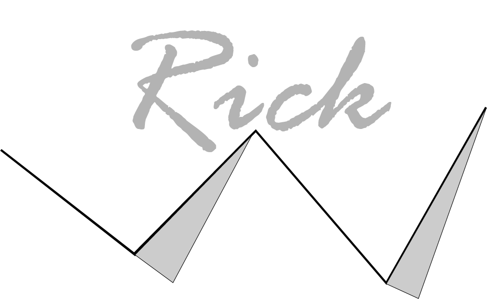

Theatergroep Imperium
Voor theatergroep Imperium was het doel om de website volledig te herontwerpen.
Na een debrieving te ontvangen
en de hele look and listen te krijgen (was al gedaan voor dit project)
kreeg ik de opdracht om theatergroep imperium te helpen meer
leden te krijgen dankzij een redesign. Dit project
vereiste verschillende onderdelen van de design details and realise fase van het CMD toolkit.
Ik was persoonlijk verantwoordelijke voor het hele project. Ik ga op deze
pagina een aantal van de uitdagingen die ik tegenkwam
opnoemen en de oplossingen hiervoor. Onderaan deze pagina
staan ook twee hyperlinks voor het ontwerpverslag en de betaversie van de website
hieronder ziet u de eerste
uitdaging die ik tegenkwam, namelijk het paperprototype.

Paperprototype
Ik kreeg de opdracht om een paperprototype te maken van mijn initiële idee voor de site.
Hier zat daarentegen een extra uitdaging bij,
het paperprototype moest namelijk de flow van de site aantonen en een accurate
depictie zijn van hoe het er ongeveer uit ging zien.
Het accuraat laten zien was niet perse een grote uitdaging,
ik had van te voren al een idee van wat ik wilde ontwerpen, dus dat schetste
ik eerst om het vervolgens klaar te hebben
voor als ik de layout en werking van het Paperprototype zelf af had. Daar zat een uitdaging.
het maken van een paperprototype zelf
is niet een moeilijke opgave. Maar om het accuraat de flow te laten zien waar je doorheen gaat,
dat was vrij moeilijk om goed te doen.
Wel hoefde ik maar een aantal dingen te laten zien op de website, dat maakte het al stukke makkelijker.
Ik kwam erachter dat het
samengevoegd kon worden in twee stappen om het idee te laten zien, met twee verschillende eindschermen.
Uiteindelijk ben ik op het
ontwerp op de afbeelding hierboven gekomen, waar Imperium erg tevreden mee was.
HomeScherm
Het homescherm was ook een uitdaging. Dit kwam omdat er gevraagd
werd het homescherm herkenbaar te maken voor dagelijkse gebruikers
van de website. Ik moest dus het huidige ontwerp van de website
aanpassen op een manier dat het bij het nieuwe ontwerp van de website paste.
Hierom hergebruikte ik de panelen (van de oude website) met huidige informatie
over wat er in het theater gespeeld werd en belangrijke dingen voor Imperium. Dit maakte
ik ook meteen de nieuwe subnavigatie
voor de website, met de hoofdnavigatie in de navigatiebalk aan de bovenkant. De bovenste panelen over twee van de shows en onderaan
over twee onderdelen
over Imperium zelf. Het ontwerp was vergelijkbaar met de originele website van Imperium en zij waren ook erg blij met het resultaat
Stel vragen en Word lid
Op de afbeelding hierboven staat de "stel vragen" pagina beeld gegeven
, deze pagina had weinig uitdagingen.
Het was namelijk een vrij basis scherm die je op veel websites kan vinden.
Wel wilde ik een standaard layout hebben
voor alle pagina's die drie lagen diep zaten. Ik bedacht
me dat het slim kon zijn om het simpel te houden, met
aan de rechterkant een slideshow van foto's om beeld te geven hoe imperium
te werk gaat.
Hieronder staat de
pagina waar je lid kon worden. Ik besloot dat het slim was om niet het via een formulier te doen.
Dit omdat Imperium het
originele formulier zo goed mogelijk wilde aanhouden en dit formulier 3 a4 lang was. dus besloot ik
om een download knop
voor het origele formulier aan de onderkant te maken, met daarnaast een upload knop. Origineel moest het
formulier namelijk
verstuurd worden via de mail naar de directeur van het theater, een upload knop maakt het makkelijker voor alle
gebruikers
om het formulier te versturen.